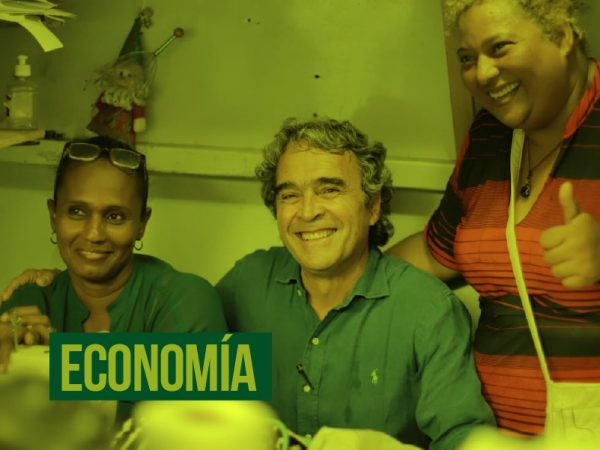
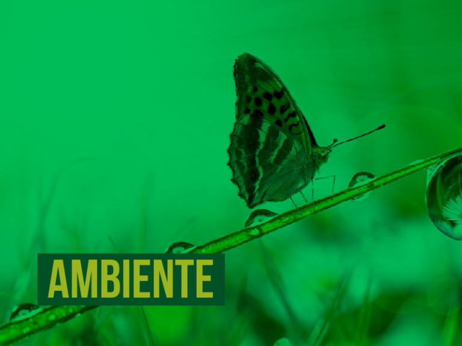

La Coalición Centro Esperanza, anteriormente conocida como Coalición de la Esperanza, fue una coalición política y electoral de Colombia compuesta principalmente por partidos y movimientos políticos de centro y centroizquierda, para las elecciones legislativas y presidenciales de 2022. Según anunciaron sus fundadores, la coalición se basó en cuatro lineamientos programáticos bajo los cuales trabajarían: recuperar la confianza en la democracia, poner la economía al servicio de la ciudadanía, cuidar la biodiversidad y proteger la ciudadanía y los territorios
Por Sergio Fajardo V.
El domingo 29 de mayo, después de varios meses de extenuante campaña política para la
presidencia de la república,
los resultados en las urnas fueron desalentadores: obtuve 4,2 % de la votación, que se
tradujeron en 890.000 votos,
que a duras penas alcanzaron para superar el umbral. Como muchos lo anunciamos, Colombia va a
cambiar y efectivamente
Colombia buscó el cambio. De manera contundente los votantes escogieron a Gustavo Petro y
Rodolfo Hernández como las
personas que representan ese posible cambio de rumbo.
NUESTRAS PRINCIPALES PROPUESTAS
1.
Una transformación productiva en la que la agricultura, la industria y los servicios,en especial los de alto contenido tecnológico
2.
La educación pasará de ser una fábrica de reproducción de las desigualdades a una fábrica de creación de oportunidades.
3.
Implementaremos el Plan Nacional de Zonificación Ambiental para orientar la inversión pública .
4.
Mi propuesta para combatir la corrupción y recuperar la confianza en las instituciones.